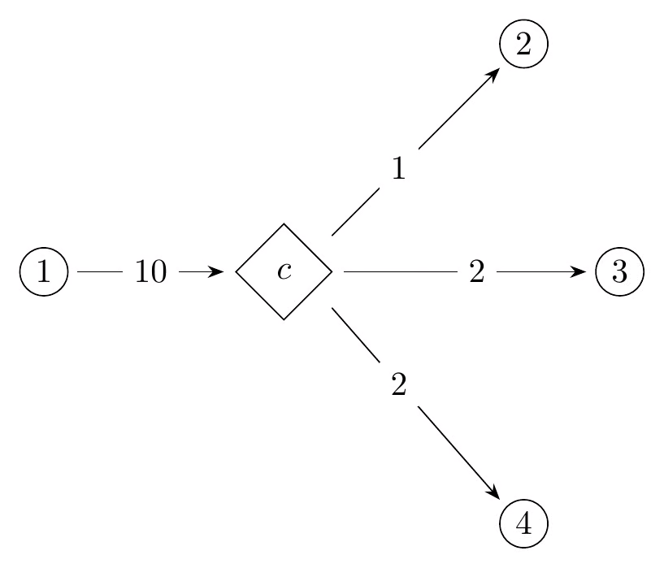
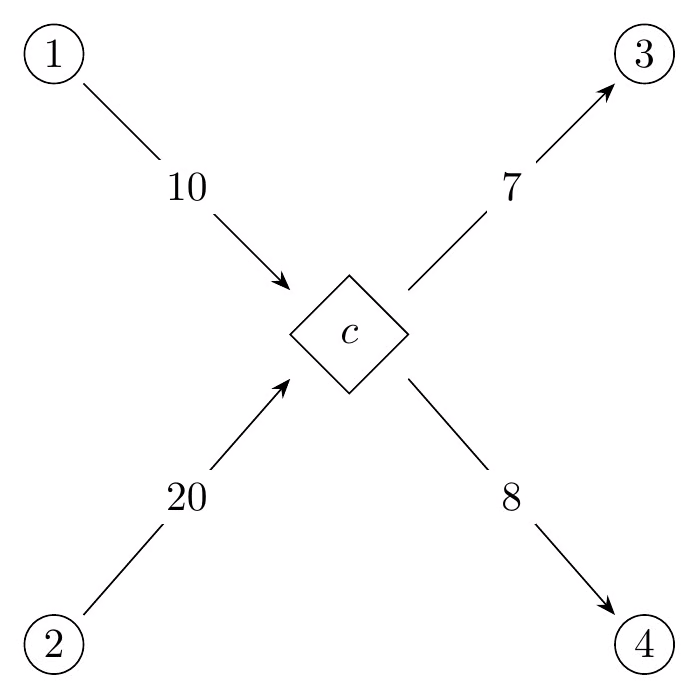

Last updated: 2026-04-24
Homework instructions/advice:
There is no problem 6 due to manual error. You will get a free point for that question.
Define A and b as follows: A = \begin{bmatrix} 3 & 7 & 6 \\ 4 & 1 & 4 \\ 3 & 8 & 7 \end{bmatrix}, b = \begin{bmatrix} 2 \\ 4 \\ 6 \end{bmatrix}
Solve the matrix-vector equation Ax = b using row-reduction. You should get integer results.
Define A as follows: A = \begin{bmatrix} 1 & 4 & 1 \\ 7 & 5 & 7 \\ 8 & 4 & 8 \end{bmatrix}
Show that A is not invertible, and give a nontrivial solution to Ax = 0.
Define A as follows: A = \begin{bmatrix} 1 & 4 \\ 7 & 5 \end{bmatrix}
Find AA^\intercal.
Give a counterexample that shows matrix multiplication is not commutative for 2\times 2 matrices.
Show that I_2A = A for all matrices A with dimension 2\times 2.
A small bakery makes two types of muffins: blueberry and chocolate chip. Each blueberry muffin requires 0.5 cups of flour and 0.25 cups of sugar. Each chocolate chip muffin requires 0.5 cups of flour and 0.5 cups of sugar. The bakery has 20 cups of flour and 15 cups of sugar available each day. The profit from each blueberry muffin is $2, and the profit from each chocolate chip muffin is $3. The bakery wants to maximize its daily profit.
You will create and solve a linear program that models the above scenario:
Note: this problem is a little more complex than the above problem, but is still possible to model using 3 decision variables (for the obvious quantities).
A furniture company produces three types of chairs: basic, deluxe, and executive. The production of each chair requires different amounts of wood, labor, and fabric. The company wants to maximize its profit given its limited daily resources.
The company’s goal is to maximize profit. The profit for each chair type, along with its material cost, is as follows:
The company has these additional constraints:
You will create (but not solve) a linear program that models the above problem:
Give an example for each of the following types of linear programs:
In class, we saw that the intersection of convex sets was convex. Is the union of convex sets convex? If so, explain. If not, provide a counterexample.
Determine the big-O time complexity of the function f in
the below piece of code, in terms of the length of the array
A.
def f(A, target):
# A is a sorted list of integers
lo = 0
hi = len(A) - 1
while lo <= hi:
mid = (hi + lo) // 2
m = A[mid]
if m == target:
return mid
elif m < target:
lo = mid + 1
else:
hi = mid - 1
return -1 Determine the big-O time complexity of the function g in
the below piece of code, in terms of n.
def g(n):
x = 0
i = 0
j = 1
while i < n:
x += 1
i += j
j += 1
return xState the time complexities for each of the following operations, in big-O notation. (Disregard amortized vs. non-amortized time.)
What does it mean for something to run in polynomial time? Why is it important?
Evaluate this expression:
\sum x \quad \forall x, 0\leq x\leq 100, x\equiv 0 \bmod 6
Evaluate this expression:
\prod_{i=1}^5 i^2
Formalize as a linear constraint each of the following statements, given a graph G = (V,E) and cost function C: E\to \mathbb N.
Use the “\forall” and “\sum” notation we covered in class, and use a decision variable x_{i,j} to denote the flow from vertex i to vertex j.
Note that C is cost, not capacity. To determine the cost of an edge (i,j)\in E in an LP solution, you must multiply the cost of the edge C((i,j)) by the amount of flow through (i,j), given by x_{i,j}.
Constraints to model:
Suppose you are given a graph G = (V,E) and vertices s,t\in V, and you are asked to model the maximum flow problem for G. However, you are also given a new type of vertex called a combiner, which requires two units of input flow for each unit of output flow, as seen in the below examples. A combiner can have any number of inputs or outputs, but the totals have to have a 2:1 ratio.


Combiners are also vertices, in the set C\subset V.
LP Model: Describe how you will model max flow on G as an LP with this modification:
Integrality: In class, we saw that for max flow, if all capacities were integer then all flows would be integer in the solution to the LP. Does that hold for this formulation? If so, explain why. If not, provide a counterexample.
For each of the following constraints on the decision variable x, state whether they can or cannot be modeled by a linear program:
For each of the following constraints on the decision variable x, state whether they can or cannot be modeled by a linear program:
END OF HW 1
There is no problem 9 due to manual error. You will get a free point for that question.
What is an integer linear program (ILP), and how does its feasible region differ from a linear program (LP)?
For LPs, we saw that constraints could only be modeled if they were convex, because the feasible region of an LP needed to be convex.
For ILPs, we discussed how there was more nuance: the inequality constraints that formed the feasible region of the LP-relaxation of an ILP (that is, the LP that is created if we remove the restriction that all decision variables need to have integer values) still needed to form a convex region, but by necessity any two or more ILP-feasible points would form a non-convex set.
To cement your understanding of this nuance, please:
Make sure to use mathematical notation (write out the actual constraint) rather than stating the constraint in words.
Do not use constraints from Problem 3 as your examples.
Let x and y be integer decision variables, and let a and b be binary decision variables.
For each of the following constraints, state whether it can be modeled in an LP, an ILP, both, or neither. Explain your reasoning.
In Problem 2, we described the notion of an LP-relaxation for an ILP, as the corresponding LP that is created if we take an ILP and remove the restriction that all decision variables need to have integer values.
Assume that the objective function is maximizing some (linear) function of the decision variables, and consider the objective values of the optimal solutions to an ILP and to its LP-relaxation.
Let O_{ILP} be the objective value for the ILP, and let O_{LP} be the objective value of its LP-relaxation. Which of the following is guaranteed to be true? State your choice, and explain your reasoning:
Suppose that an ILP has N binary decision variables, i.e. integer variables x_1, \dots, x_N with constraints 0\leq x_1, \dots, x_N \leq 1. Assume that there are no constraints other than the binary constraints on x_1, \dots, x_N.
How many feasible solutions does the ILP have?
For problems 6 and 7, a table is provided that maps from an LP-relaxation of the problem to its optimal solution’s objective value and the optimal values of its decision variables. Use the table when solving those problems, instead of solving the LP-relaxation by hand or using other tools.
For problem 8, you will need to solve the LP-relaxations in each branch and bound node using OR-Tools, or a similar tool. Feel free to use this template Python notebook (lp_solver.ipynb), as I did during lecture when we solved these problems: Branch and bound practice problems.
For each of problems 6, 7, and 8, make sure to draw the branch and bound tree and clearly indicate whether pruned/fathomed nodes are infeasible, integer, incumbent, and/or pruned by objective value.
Using the branch and bound method to determine which LP-relaxations to solve, and using the provided table to determine the optimal solutions to the LP-relaxations of the problem, determine the optimal solution to the below ILP:
\begin{aligned} \max \quad & z = x_1 + x_2 \\ s.t. \quad & 4x_1 + x_2 \leq 10 \\ \quad & 9x_1 - x_2 \geq 1 \\ \quad & x_1, x_2 \geq 0, \text{integer} \end{aligned}
LP-relaxation solution table:
| Added constraints | Objective value | Decision variables |
|---|---|---|
| None | 7.46 | x_1 = 0.85, x_2 = 6.62 |
| x_1 \leq 0 | Infeasible | Infeasible |
| x_1 \geq 1 | 7 | x_1 = 1, x_2 = 6 |
Using the branch and bound method to determine which LP-relaxations to solve, and using the provided table to determine the optimal solutions to the LP-relaxations of the problem, determine the optimal solution to the below ILP:
\begin{aligned} \max \quad & z = x_1 + x_2 \\ s.t. \quad & 4x_1 + 3x_2 \leq 12 \\ \quad & 2x_1 + 4x_2 \leq 12 \\ \quad & x_1, x_2 \geq 0, \text{integer} \end{aligned}
LP-relaxation solution table:
| Added constraints | Objective value | Decision variables |
|---|---|---|
| None | 3.6 | x_1 = 1.2, x_2 = 2.4 |
| x_1 \leq 1 | 3.5 | x_1 = 1, x_2 = 2.5 |
| x_1 \leq 1, x_2 \leq 2 | 3 | x_1 = 1, x_2 = 2 |
| x_1 \leq 1, x_2 \geq 2 | 3 | x_1 = 0, x_2 = 3 |
| x_1 \geq 2 | 3.33 | x_1 = 2, x_2 = 1.33 |
| x_1 \geq 2, x_2 \leq 1 | 3.25 | x_1 = 2.25, x_2 = 1 |
| x_1 \geq 2, x_2 \geq 2 | Infeasible | Infeasible |
| x_1 \geq 2, x_2 \leq 1, x_1 \leq 2 | 3 | x_1 = 2, x_2 = 1 |
| x_1 \geq 2, x_2 \leq 1, x_1 \geq 3 | 3 | x_1 = 3, x_2 = 0 |
Using the branch and bound method to determine which LP-relaxations to solve, and using OR-Tools (or a similar LP-solving tool) to solve the LP-relaxations of the problem, determine the optimal solution to the below ILP:
\begin{aligned} \max \quad & z = 3x_1 + 2x_2 \\ s.t. \quad & 954x_1 - 23x_2 \geq 1345 \\ \quad & 274x_1 - 344x_2 \geq 3 \\ \quad & 2x_1 + 3x_2 \leq 12 \\ \quad & x_1, x_2 \geq 0, \text{integer} \end{aligned}
For each of the following statements, write the statement as an ILP constraint (or multiple constraints that model the statement), or say why it is not possible.
Assume x_1, x_2, x_3 are integer variables. Feel free to define any integer or binary variables as needed.
For each of the following constraint, write the constraint as an ILP constraint (or multiple constraints that model the constraint), or say why it is not possible.
Assume b_1, b_2 are binary variables, where a value of 1 denotes “true” and a value of 0 denotes “false”. Feel free to define any integer or binary variables as needed.
In these statements, XOR (exclusive or) is denoted by \oplus, AND is denoted by \land, OR is denoted by \lor, NOT is denoted by \neg, and IMPLIES is denoted by \to.
For each of the following statements, write the statement as an ILP constraint (or multiple constraints that model the statement), or say why it is not possible.
Assume b_1, b_2, b_3 are binary variables. Feel free to define any integer or binary variables as needed.
Recall the knapsack problem we discussed in class on 4/20 and 4/22. Consider the modification to the problem where instead of maximizing the benefit of items included in the knapsack, you instead attempt to maximize the number of items in the knapsack. Describe how the formulation will change and provide the complete modified formulation in your answer (decision variables, constraints, objective function).
Recall the set cover problem we discussed in class on 4/22. Consider the modification to the problem in which we require that each vertex is covered by at least two subsets instead of just one. Describe how the formulation will change and provide the complete modified formulation in your answer (decision variables, constraints, objective function).
Recall the assignment problem we discussed in class on 4/22. Consider the modification to the problem in which there are exactly twice as many tasks as people, and each person must complete exactly 2 tasks. Describe how the formulation will change and provide the complete modified formulation in your answer (decision variables, constraints, objective function).
Recall the vertex cover problem we discussed in lecture on 4/27. Describe how to extend the model if each vertex has a cost associated with it, given by some cost function C: V \to \mathbb R, and the objective is to minimize the total weight of the chosen vertices instead of minimizing the total number of vertices chosen. Include the full vertex cover formulation in your answer (decision variables, constraints, objective function).
Recall the scheduling formulation we discussed in class on 4/20 and 4/22. Let the set of tasks be T = \{A,B,C,D,E\}, with the following prerequisite relationship: \begin{gathered} A \prec B \\ B \prec D \\ C \prec D \\ C \prec E \end{gathered}
What constraints need to be added to the scheduling formulation discussed in class to ensure these precedence relationships are respected? Remember that the binary decision variables p_{t_1, t_2} are for use by the model, and are not for you to use. You should instead use the start and end times of each task. Write the entire modified formulation (decision variables, constraints, objective function) and explain what you added.
More problems will be posted…